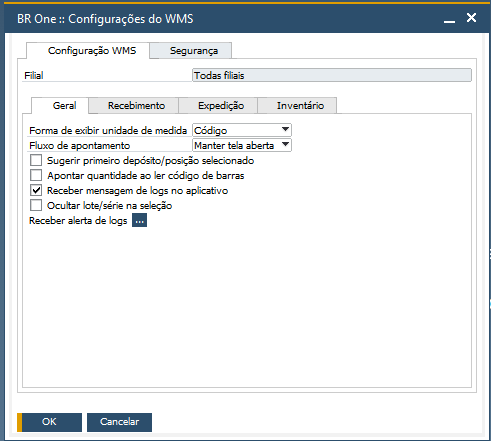
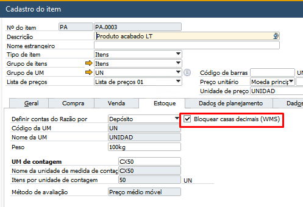

Aba Geral
Na Aba Geral, você encontrará todos os parâmetros que adicionam comportamentos em diversos menus do aplicativo.
Parâmetro Forma de exibir unidade de medida


O parâmetro Forma de exibir unidade de medida, pode ser definido entre Descrição e Código.
No aplicativo, em todos os menus, de acordo com a opção selecionada, nos detalhes do item, do lado do campo Quantidade, será exibida a descrição ou o código da unidade de medida.
Parâmetro Fluxo de apontamento


O parâmetro Fluxo de apontamento, pode ser definido entre Fechar tela e Manter tela aberta.
No aplicativo, nos menus Conferência e Contagem de inventário, com a opção Fechar tela selecionada, após registrar o apontamento será retornada para a tela anterior. Definida a opção Manter a tela aberta, após registrar o apontamento a tela será mantida.
Parâmetro Sugerir primeiro depósito/posição selecionado

Quando ativo o parâmetro Sugerir primeiro depósito/posição selecionado, no aplicativo, nos menus Transferir para produção e Transferir estoque, após registrar o primeiro depósito/posição, os próximos lançamentos virão pré-preenchidos com o primeiro depósito/posição selecionado.
Parâmetro Apontar quantidade ao ler código de barras

Quando ativo o parâmetro Apontar quantidade ao ler código de barras, no aplicativo, em todos os menus, será realizado o preenchimento da quantidade através da leitura do código do item ou código de barras.
Parâmetro Receber mensagem de logs no aplicativo

Quando ativo o parâmetro Receber mensagem de logs no aplicativo, em todos os menus, todas as mensagens de erros que seriam exibidas apenas para os usuários definidos em Receber alerta de logs, passam a ser exibidas no aplicativo.
Parâmetro Bloquear casas decimais (WMS) no Cadastro do item
No Cadastro do item, na aba Estoque, quando ativo o parâmetro Bloquear casas decimais (WMS), em todos os menus, as casas decimais serão removidas na digitação da quantidade.
Parâmetro Ocultar Lote/Seleção

Quando o parâmetro Ocultar lote/seleção estiver ativo, no aplicativo, o usuário não terá mais a visão do lote/série e a seleção só estará disponível através da leitura do código de barras do lote/série.